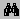
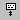

DebugView has several features that can help you zoom-in on the debug output you are interested in. These capabilities include searching, filtering, and limiting the number of debug output lines saved in the display.
To reset the output window, use the Edit|Clear Display menu item, toolbar button, or Ctrl+X hot-key sequence. This also causes the sequence number to be reset to 0.
If you want to search for a line containing text of interest you use the find dialog. The find dialog is activated with the Ctrl+F hot-key sequence, the Edit|Find menu entry, or the

toolbar button. If the search you specify matches text in the output window, DebugView will highlight the matching line and turn off the display’s auto-scroll in order to keep the line in the window. To repeat a successful search, use the F3 hot-key.Another way to isolate output that you are interested in is to use DebugView’s filtering capability. Use the Edit|Filter/Highlight menu item, toolbar button, or Ctrl-L hot-key to activate the filter dialog. The dialog contains two edit fields: include and exclude. The include field is where you enter substring expressions that match debug output lines that you want DebugView to display, and the exclude field is where you enter text for debug output lines that you do not want DebugView to display. You can enter multiple expressions, separating each with a semicolon (‘;’). Do not include spaces in the filter expression unless you want the spaces to be part of the filter. Note that the filters are interpreted in a case-insensitive manner, and that you should use ‘*’ as a wildcard.
As an example, say you want DebugView to display debug output that contains either “error” or “abort”, but want to exclude lines that contain either of those strings and the word “gui”. To configure DebugView’s filters for this you enter “error;abort” for the include filter and “gui” for the exclude filter. If you wanted to have DebugView show only output that has "MyApp:" at the start of the output line and "severe" at the end, you could use a wildcard in the include filter: "myapp:*severe".
DebugView also has another type of filtering: highlighting. If you want output lines that contain certain text to be highlighted in the DebugView output window, enter a highlight filter. DebugView implements support for up to five different highlight filters, each with its own foreground and background color settings. Use the filter drop-down in the highlight filter area of the filter dialog to select which highlight filter you want to edit. Use the same syntax just described for include and exclude filters when defining a highlight filter.
To change the colors used for the foreground and background of highlighted lines, click on the Colors button when you have selected the highlight filter you wish to modify. You will be asked to pick colors from a palette, and your choices will be remembered by DebugView from run to run.
Use the Load and Save buttons on the filter dialog to save and restore filter settings, including the include, exclude and highlighting filters, as well as the highlighting colors settings.
A final way to control DebugView output is to limit the number of lines that are retained in the display. You use the Edit|History-Depth menu item,

toolbar button, or the Ctrl+H hot-key sequence to activate the history-depth editor. Enter the number of output lines you want DebugView to retain and it will keep only that number of the most recent debug output lines, discarding older ones. A history-depth of 0 represents no limit on output lines retained.You do not need to use the history-depth feature to prevent all of a system’s virtual memory from being consumed in long-running captures. DebugView monitors system memory usage and will go into a low-memory state when it detects that memory is running low. DebugView’s low-memory state consists of it not capturing further debug output until the low-memory condition is no longer in effect.